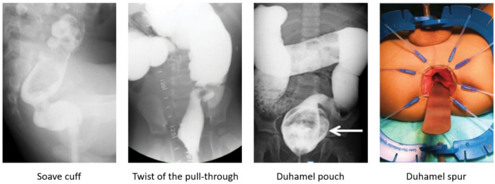
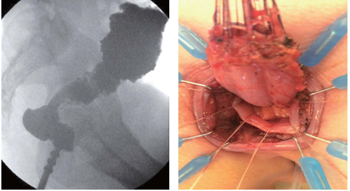
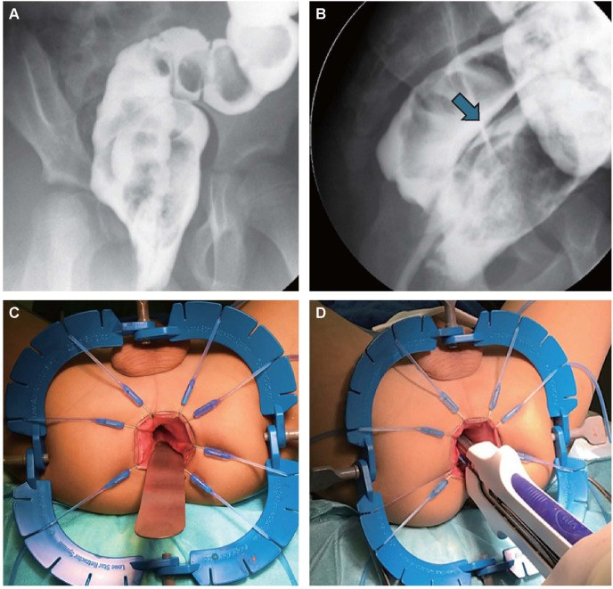
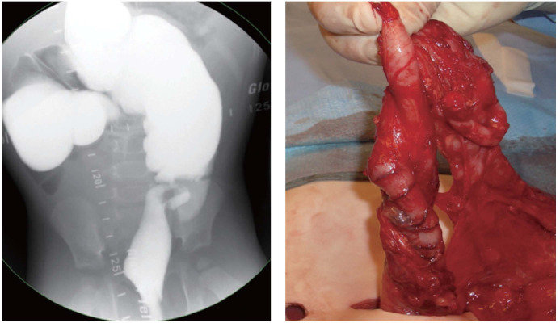

1867 — Táo bón & ứ phân sau kéo trực tràng ở trẻ: nước rửa, laxative, botulinum và khi nào mổ lại / Constipation and obstructive defecation after pull-through for Hirschsprung disease
Tags: pattern:tao-bon pattern:hep-miem-noi pattern:roi-loan-nhu-dong-dai-trang vung:truc-trang vung:dai-trang vung:hau-mon score:HAEC protocol:contrast-enema protocol:manometry
Mức chắc chắn (certainty): tổng hợp y văn (literature synthesis) — số liệu lấy từ toàn văn của đoàn hệ 91 trẻ mổ Hirschsprung tại Zürich–Frankfurt (Pediatric Surgery International 2026, PMC13652869, CC BY 4.0), tổng quan điều trị ruột của Bệnh viện Nhi Columbus (Children 2023, PMC10453740, CC BY 4.0), tổng quan phẫu thuật Hirschsprung (World Journal of Pediatric Surgery 2024, PMC11429006, CC BY-NC), meta-analysis 34 nghiên cứu/2.207 bệnh nhân về transition-zone anastomosis (Children 2023, PMC10528601, CC BY 4.0) và 36 trẻ đối chiếu mô bệnh học của ống hậu môn trên phim đối quang (Pediatric Surgery International 2020, PMC7043041, CC BY 4.0). Nhóm không có bệnh nhân của mình.
Câu chốt: sau kéo trực tràng (pull-through), tới 53% trẻ có triệu chứng tắc nghẽn và tới 50% còn vấn đề ruột (táo bón, HAEC, són phân) — nhưng chỉ 9% (95% CI 5–14%) có mô học còn vùng chuyển tiếp ở miệng nối. Vì vậy trình tự bắt buộc là: (1) phim đối quang + thăm khám dưới mê để loại trừ nguyên nhân GIẢI PHẪU (hẹp miệng nối, cổ áo Yancey–Soave, xoắn, túi/gai Duhamel, vùng chuyển tiếp), (2) nếu giải phẫu bình thường → coi là cơ thắt trong không giãn (internal anal sphincter achalasia) và điều trị bằng botulinum + chế độ ruột, (3) chỉ mổ lại khi có bằng chứng giải phẫu. Cho laxative/enema trước khi cơ thắt giãn được là làm nặng thêm (phân ứ ở đại tràng đoạn xa).
1. Tổng quan bệnh học – cơ chế hình ảnh (TẠI SAO)
1.1 Vì sao vẫn "tắc" sau một cuộc mổ đúng
- Bệnh cơ bản vẫn còn ở lại: phẫu thuật cắt đoạn vô hạch và kéo đại tràng có hạch xuống, nhưng cơ thắt hậu môn trong (internal anal sphincter, IAS) luôn vô hạch ở Hirschsprung — IAS không có đám rối thần kinh ruột nên mất phản xạ giãn cơ thắt–trực tràng (rectoanal inhibitory reflex, RAIR). Kéo trực tràng không tạo lại RAIR; trẻ phải học cách đẩy phân qua một van không mở bằng áp lực ổ bụng và cơ thành bụng.
- Hai nhóm nguyên nhân phải tách tuyệt đối:
- Giải phẫu (anatomic): hẹp miệng nối, cổ áo Yancey–Soave còn lại (cuff), xoắn ống kéo xuống (twisted pull-through), túi Duhamel quá lớn / gai Duhamel còn (retained spur), kéo xuống trên vùng chuyển tiếp (transition-zone anastomosis), hẹp do hở miệng nối.
- Chức năng (functional): IAS không giãn, rối loạn nhu động đại tràng (đại tràng kéo xuống giảm nhu động dù có hạch), loạn cảm giác–vận động sàn chậu (dyssynergic defecation).
- TẠI SAO hình ảnh quyết định: ba nguyên nhân giải phẫu đầu tiên chỉ sửa được bằng mổ/phẫu thuật nội soi, còn nhóm chức năng sửa bằng thuốc/botulinum — dùng sai hướng nghĩa là hoặc mổ lại oan hoặc kéo dài ứ phân → HAEC, giãn đại tràng mất bù.
1.2 Ngưỡng định lượng nằm lòng
| Chỉ số | Con số | Nguồn |
|---|---|---|
| Triệu chứng tắc nghẽn sau kéo trực tràng | tới 53% | PMC10453740 |
| HAEC sau mổ | tới 37% | PMC10453740 |
| Không tăng cân theo kỳ vọng | 7,5% | PMC10453740 |
| Són phân/không kiểm soát | tới 48% | PMC10453740 |
| Vấn đề ruột kéo dài chung | tới 50% | PMC11429006 |
| Vùng chuyển tiếp ở miệng nối (TZA) | 9% (95% CI 5–14), 34 nghiên cứu, 2.207 bệnh nhân | PMC10528601 |
| Hậu quả của TZA | tắc nghẽn khi đại tiện 62%, viêm ruột 38%, són 28%, không kiểm soát 24% | PMC10528601 |
| Hẹp miệng nối: nong định kỳ vs calibration một lần | 10,9% (5/46) vs 20% (9/45), p = 0,259 → nong định kỳ không giảm hẹp | PMC13652869 |
| HAEC: nong định kỳ vs calibration | 10,9% vs 13,3%, p = 0,718 | PMC13652869 |
| Táo bón/không kiểm soát: nong vs calibration | 34,8% (16/46) vs 32,6% (14/45) | PMC13652869 |
| Thời điểm phát hiện hẹp | nong: ngày 22–356; calibration: ngày 13–1.623 sau mổ | PMC13652869 |
| Mổ trước 2,5 tháng tuổi (so với muộn hơn) | táo bón/són 26% vs 11%, hẹp 10% vs 2%, rò 6% vs 1% | PMC11429006 |
| Không thấy vùng chuyển tiếp trên phim đối quang | 10% ca Hirschsprung (không loại trừ bệnh) | PMC11429006 |
| Phim đối quang đoán mức vô hạch (36 trẻ) | độ nhạy 100%, độ đặc hiệu 35,7%, PPV 30,8%, NPV 100%, độ chính xác 50% | PMC7043041 |
| Botulinum toxin hiệu quả | 66–72%, tác dụng trong 1 tháng, kéo dài ~3 tháng, còn lợi ích tới 6 tháng | PMC10453740 |
| Botulinum: khỏi hẳn / cải thiện | 22% không cần điều trị thêm; nghiên cứu khác 76% cải thiện, 51% tốt dài hạn | PMC10453740 |
| Tiêm nhắc lại | mỗi 3–12 tháng; hiệu quả lần sau 44% vs 77% lần đầu | PMC10453740 |
| Biến chứng botulinum | són phân tạm thời, tự hết ~9% | PMC10453740 |
| Tuổi "hết" vấn đề cơ thắt | thường trước 5 tuổi | PMC10453740 |
1.3 Vì sao phim đối quang "thấy" được nguyên nhân — vật lý cột thuốc cản quang
- Cột thuốc cản quang đi theo lòng ruột: chỗ hẹp thật (miệng nối xơ) làm cột thuốc thuôn dài, không đổi theo thì; chỗ cổ áo tạo vòng hẹp đối xứng ngay trên cơ thắt kèm khoang trước xương cùng rộng ra (vì trực tràng thật đã bị bóc, ống kéo xuống không áp sát xương cùng); chỗ xoắn làm cột thuốc vặn, lệch trục và không xẹp khi tháo bóng; túi Duhamel là ổ cặn lớn phía sau đọng thuốc khi đã đại tiện; gai Duhamel là vách ngăn dọc giữa hai lòng.
- Vì sao cần phim thì muộn/ sau đại tiện: phân và thuốc đọng lại trong ổ cặn hoặc trong đại tràng giảm nhu động chỉ lộ ra khi đã tháo bóng và cho trẻ rặn — phim sớm chỉ thấy đoạn ruột đầy thuốc, dễ đọc "bình thường".
- Vì sao manometry mới trả lời câu hỏi chức năng: RAIR là đáp ứng cơ trơn (giãn IAS khi bóng trực tràng căng) — không nhìn thấy trên hình ảnh; đo áp lực mới phân biệt IAS không giãn với đại tràng giảm nhu động và loạn vận động sàn chậu.
- Vì sao "nong định kỳ" không giúp: hẹp sau kéo trực tràng phần lớn do xơ hóa vòng miệng nối + thiếu máu đầu ống kéo, kéo giãn cơ học không làm lành mô xơ — số liệu 91 trẻ cho thấy hẹp còn nhiều hơn ở nhóm nong định kỳ (20% vs 10,9%, không khác biệt có ý nghĩa).
2. Mẫu hình + chẩn đoán phân biệt theo vị trí (gamut)
Mẫu hình: trẻ đã mổ Hirschsprung (Soave/Boley, Swenson, Duhamel, TERPT), đến khám vì đi cầu ít, phân dẹt/nhỏ giọt, đầy bụng, nôn, hoặc són phân liên tục trên nền ứ phân.
Gamut theo trục thời gian – vị trí:
- Ngay sau mổ (0–4 tuần): hẹp miệng nối (hẹp thật do xơ/thiếu máu, hoặc do co thắt tạm thời), xoắn ống kéo xuống (triệu chứng sớm, nặng), rò/hở miệng nối.
- 1–12 tháng: vùng chuyển tiếp còn lại ở miệng nối (kéo xuống quá thấp), cổ áo Yancey–Soave dày, túi Duhamel quá lớn, IAS không giãn bắt đầu lộ rõ khi trẻ ăn nhiều hơn và bắt đầu tập ngồi bô.
- Sau 1 tuổi: rối loạn nhu động đại tràng, loạn vận động sàn chậu (dyssynergic defecation), giãn đại tràng mất bù (megarectum/megacolon) do ứ phân kéo dài, HAEC tái diễn.
- Gamut theo hình thái trên phim đối quang: (a) hẹp đối xứng ngay trên cơ thắt → cổ áo/co thắt; (b) hẹp không đều, bờ xơ → hẹp miệng nối; (c) cột thuốc vặn, lệch trục → xoắn; (d) ổ cặn sau trực tràng → túi Duhamel; (e) vách dọc → gai Duhamel; (f) đoạn hẹp dài trên miệng nối + đoạn trên giãn → vùng chuyển tiếp; (g) trực tràng/đại tràng giãn đều, không hẹp → chức năng.
3. Bảng so sánh phân biệt (ma trận đối chiếu)
| Thực thể (entity) | Hình ảnh điển hình (đối quang / nội soi / manometry) | Chốt vào (rule-in) | Chốt loại (rule-out) | Gợi ý xác nhận |
|---|---|---|---|---|
| Hẹp miệng nối (anastomotic stricture) | Cột thuốc hẹp không đều, bờ xơ, ngay tại miệng nối; trên giãn | Không qua được đầu ngón tay/ống nong chuẩn khi thăm khám dưới mê + hẹp cố định nhiều lần đo | Hẹp mất đi khi cơ thắt giãn (botulinum/mê sâu) → không phải hẹp thật | Thăm khám dưới mê (EUA), nong có kiểm soát; mổ lại nếu tái hẹp |
| Cổ áo Yancey–Soave (retained cuff) | Vòng hẹp đối xứng ngay trên cơ thắt + khoang trước xương cùng rộng | Thấy vòng cổ áo dày khi EUA và trên phim; tắc nghẽn tái diễn | Túi cùng lòng rộng đều, không vòng hẹp → giãn mất bù | EUA + siêu âm nội trực tràng; mổ lại cắt cổ áo |
| Xoắn ống kéo xuống (twisted pull-through) | Cột thuốc vặn, lệch trục, ứ phân trên chỗ vặn | Triệu chứng sớm, nặng + hình vặn trên phim + không qua được ống soi | Lòng ruột thẳng, không vặn → loại | Phẫu thuật sửa xoắn (mổ lại) |
| Túi / gai Duhamel | Ổ cặn lớn sau đọng thuốc (túi), vách dọc chia hai lòng (gai) | Đọng cặn sau khi đã đại tiện, són phân do trào từ túi | Miệng nối một lòng, không vách → loại | Cắt bớt vách/túi, khâu lại |
| Kéo xuống trên vùng chuyển tiếp (TZA) | Đoạn hẹp dài trên miệng nối rồi đoạn giãn; không có đoạn chuyển tiếp rõ | Mô học miệng nối còn thiếu hạch + tắc nghẽn kéo dài (62%) | Mô học có hạch đầy đủ ở miệng nối → loại | Đọc lại tiêu bản, mổ lại nếu xác nhận |
| IAS không giãn (internal sphincter achalasia) | Phim không có hẹp cố định; trực tràng không giãn quá mức; RAIR mất | Không có nguyên nhân giải phẫu trên EUA + không RAIR + đáp ứng botulinum | Có hẹp/cổ áo/xoắn → loại (phải sửa giải phẫu trước) | Manometry; botulinum 66–72% |
| Rối loạn nhu động đại tràng / sàn chậu | Đại tràng giãn, ứ thuốc (giảm nhu động) hoặc caliber bình thường (tăng nhu động); manometry bất thường | Manometry đại tràng/sàn chậu bất thường sau khi đã loại giải phẫu và IAS | Manometry bình thường + đáp ứng chế độ ruột → loại | Manometry, pelvic floor therapy, ACE |

Trái sang phải: cổ áo Soave (vòng hẹp), xoắn ống kéo xuống, túi Duhamel (mũi tên: ổ cặn), gai Duhamel (vách dọc). Nguồn: Children 2023, PMC10453740, CC BY 4.0.Ba câu hỏi phải trả lời trước khi kê đơn
- Có hẹp cố định không? (đo bằng ống nong/ngón tay dưới mê, không chỉ nhìn phim)
- Có ổ cặn/vách/xoắn không? (phim thì muộn + sau đại tiện)
- Có RAIR không? (manometry) — nếu không có và giải phẫu sạch → botulinum.
4. Protocol chụp + hệ phân độ/điểm chuẩn hóa
4.1 Phim đối quang đại tràng sau kéo trực tràng (water-soluble, không dùng baryt)
- Chỉ định: mọi trẻ có triệu chứng tắc nghẽn/són phân kéo dài > 2–4 tuần sau mổ hoặc tái diễn.
- Kỹ thuật: thuốc cản quang tan trong nước (baryt cấm khi nghi hở miệng nối); không bơm bóng ở trực tràng (bóng che miệng nối và làm sai vị trí đo); bơm chậm, áp lực thấp; chụp thẳng + nghiêng (nghiêng mới đo được khoảng trước xương cùng); phim sau khi tháo bóng + cho trẻ rặn/đại tiện để lộ ổ cặn và túi.
- Đo và ghi: đường kính lòng tại miệng nối, chiều dài đoạn hẹp, khoảng trước xương cùng, sự hiện diện vách dọc, mức ứ phân (thang ước lượng theo khung đại tràng).
- Giá trị và giới hạn: phim đối quang nhạy 100% nhưng đặc hiệu 35,7% khi đoán mức vô hạch — dùng để phát hiện bất thường, không dùng để quyết định mức cắt (PMC7043041).
4.2 Thăm khám dưới mê (examination under anaesthesia, EUA) — bước không được bỏ
- Đo caliber miệng nối bằng ống nong/ngón tay, xác định cổ áo, xoắn, gai; sinh thiết nếu nghi vùng chuyển tiếp.
4.3 Manometry và nội soi
- Manometry hậu môn–trực tràng: xác nhận mất RAIR, đo áp lực nghỉ (IAS không giãn thường tăng), phát hiện loạn vận động sàn chậu.
- Manometry đại tràng/sitz marker: khi nghi rối loạn nhu động — lưu ý kết quả sai lệch nếu còn tắc nghẽn đường ra, phải giải quyết tắc trước.
4.4 Điều trị theo bậc (thang bậc thầy thuốc)
| Bậc | Can thiệp | Ngưỡng chuyển bậc |
|---|---|---|
| 0 | Nước rửa trực tràng (rectal irrigation) — dung dịch NaCl 0,9% ở trẻ < 3 tuổi**; nước máy **chỉ dùng > 3 tuổi (nguy cơ hạ natri máu) | Không sạch phân sau 2–4 tuần |
| 1 | Thử laxative 7 ngày: sennosid (kích thích) ± PEG 3350/lactulose (thẩm thấu) ± chất xơ hòa tan | Không đáp ứng → bậc 2 |
| 2 | Botulinum toxin vào cơ thắt trong (chỉ khi giải phẫu sạch) — hiệu quả 66–72%, tác dụng ~3 tháng, tiêm nhắc 3–12 tháng | Thất bại 2 lần hoặc tái phát sớm → bậc 3 |
| 3 | Nong định kỳ/thử calibration chỉ khi có hẹp thật; enema giữ (retention enema) thể tích lớn để làm sạch cơ học | Vẫn ứ sau 6–12 tháng giải áp tốt → bậc 4 |
| 4 | Transanal irrigation / ACE (Malone); myectomy sau chỉ khi thất bại botulinum (nguy cơ són phân vĩnh viễn) | Có nguyên nhân giải phẫu → mổ lại |
Quy tắc vàng: không cho laxative/enema khi cơ thắt chưa giãn — phân sẽ ứ ở đại tràng đoạn xa, làm nặng tắc nghẽn và gây nôn; phải rửa trực tràng trong lúc chờ botulinum.
flowchart TD
A[Trẻ táo bón/ứ phân sau kéo trực tràng] --> B[Phim đối quang tan trong nước + phim sau đại tiện]
B --> C[Thăm khám dưới mê: đo caliber, tìm cổ áo/xoắn/gai]
C --> D{Có nguyên nhân giải phẫu?}
D -->|Có| E[Mổ lại / nong có kiểm soát]
D -->|Không| F{Manometry: có RAIR?}
F -->|Không RAIR| G[IAS không giãn: botulinum toxin]
F -->|Có RAIR| H[Manometry đại tràng: giảm nhu động hay loạn vận động sàn chậu]
G --> I[Chế độ ruột: rửa trực tràng rồi laxative 7 ngày]
H --> I
I --> J{Đỡ sau 3 tháng?}
J -->|Không| K[Tiêm nhắc / TAI / ACE / myectomy]
J -->|Có| L[Theo dõi tới 5 tuổi, tập ngồi bô]
4.5 HAEC — không được bỏ qua khi trẻ "chỉ táo bón"
- HAEC là nguyên nhân tử vong chính sau mổ: sốt + bụng chướng + phân hôi + lơ mơ; xử trí rửa trực tràng, kháng sinh, giảm áp theo phác đồ, không chờ cấy.
- HAEC tái diễn sau mổ: 10,9–37% tùy đoàn hệ; botulinum có vai trò dự phòng ở trẻ có HAEC tái diễn kèm cơ thắt không giãn.
5. Biến thể bình thường và cạm bẫy
- "Hẹp" giả do co thắt: co thắt cơ thắt trong khi trẻ khóc/không hợp tác làm cột thuốc hẹp đối xứng — đo lại dưới mê; đừng mổ vì một phim.
- Nong định kỳ không phải "cho chắc": 91 trẻ cho thấy hẹp 20% vs 10,9%, HAEC và táo bón không khác — nong chỉ khi có hẹp thật, và một lần calibration đủ để quyết định.
- Nước máy ở trẻ nhỏ: dùng nước máy để rửa trực tràng ở trẻ < 3 tuổi có thể gây hạ natri máu, co giật — dùng NaCl 0,9%.
- Són phân ≠ "đã khỏi táo bón": són trên nền ứ phân (overflow soiling) là dấu hiệu mất bù, không phải cải thiện; phim đối quang + thang ứ phân mới phân biệt với són do cơ thắt tổn thương (caliber bình thường, không ứ).
- Đọc phim sớm: ổ cặn Duhamel và đại tràng giảm nhu động chỉ lộ khi đã đại tiện — phim ngay sau bơm thuốc dễ kết luận "bình thường".
- Bỏ sót vùng chuyển tiếp: 10% Hirschsprung không có vùng chuyển tiếp rõ trên phim; ở trẻ đã mổ thì chẩn đoán dựa vào mô học miệng nối, không dựa phim.
- Nghĩ "táo bón chức năng" quá sớm ở trẻ chưa được EUA — mất cửa sổ sửa miệng nối trước khi đại tràng giãn mất bù.
6. Tự lượng giá — Blind Quiz
Ca 1 — Bé trai 3 tuổi, mổ Soave lúc 4 tháng. Đi cầu 3–4 ngày/lần, phân dẹt, đầy bụng. Nhìn phim trước, mô tả trước.

- Gợi ý: không sốt, không nôn; thăm khám trực tràng thấy vòng chắc ngay trên cơ thắt.
- Câu hỏi: dấu hiệu chính trên phim? Ba chẩn đoán phân biệt? Dấu hiệu nào chốt?
Bấm để hiện đáp án (findings + chẩn đoán)
- Findings: cột thuốc bị thắt đối xứng ngay trên cơ thắt, đoạn trên giãn; khoảng trước xương cùng rộng (trực tràng thật đã bóc, ống kéo xuống không áp sát xương cùng). Panel phải: vòng cổ áo thấy khi mổ lại.
- Chẩn đoán: cổ áo Yancey–Soave còn lại (retained cuff) — nguyên nhân giải phẫu → mổ lại cắt cổ áo, không phải botulinum.
- Vì sao: cổ áo là vòng cơ trơn vô hạch còn lại quanh ống kéo xuống → vừa hẹp cơ học vừa không giãn theo RAIR.
- Nguồn ảnh: World J Pediatr Surg 2024, PMC11429006, Fig. 6, CC BY-NC.
Ca 2 — Bé gái 7 tuổi, mổ Duhamel 2 tháng tuổi, són phân mỗi ngày nhưng vẫn "đầy bụng".

- Câu hỏi: tại sao vừa són vừa ứ? Hai hình thái trên phim?
Bấm để hiện đáp án
- Findings: (A/B) ổ cặn lớn phía sau đọng thuốc dù đã đại tiện = túi Duhamel quá lớn; (B, mũi tên) vách dọc = gai Duhamel còn (đỉnh túi trực tràng không cắt sát miệng nối).
- Cơ chế: túi là kho chứa không có nhu động phối hợp → phân ứ, lên men, trào ra → són kiểu tràn (overflow); gai tạo hai lòng cạnh tranh.
- Xử trí: cắt vách/kéo dài đường đóng ghim qua đường hậu môn, hoặc mổ lại thu nhỏ túi.
- Nguồn ảnh: World J Pediatr Surg 2024, PMC11429006, Fig. 7, CC BY-NC.
Ca 3 — Bé trai 2 tuổi, mổ TERPT 6 tháng tuổi, bụng chướng tăng dần, nôn, không sốt. Phim đối quang dưới đây.

- Câu hỏi: dấu hiệu trên phim? Vì sao không đặt botulinum?
Bấm để hiện đáp án
- Findings: cột thuốc vặn, lệch trục ở đoạn ống kéo xuống; ứ phân đoạn trên. Panel phải: xoắn thật thấy khi mổ lại.
- Chẩn đoán: xoắn ống kéo xuống (twisted pull-through) — biến chứng sớm và nặng, có thể dẫn tới hoại tử/thiếu máu đoạn kéo.
- Vì sao không botulinum: đây là nguyên nhân giải phẫu; làm giãn cơ thắt không sửa được xoắn, chỉ làm chậm mổ.
- Nguồn ảnh: World J Pediatr Surg 2024, PMC11429006, Fig. 8, CC BY-NC.
Bài liên quan chéo
- 1779 – Hẹp miệng nối sau kéo trực tràng ở trẻ
- 546 – Loạn vận động tổng phận – anismus
- 555 – Táo bón chậm vận chuyển & loạn cảm trực tràng
- 3100 – Quản lý ruột sau mổ dị tật hậu môn trực tràng
- 600 – Tổng quan Nhi khoa
Ảnh
images/1867_taobon_PMC10453740-children-10-01418-g002.jpg— 4 nguyên nhân giải phẫu (CC BY 4.0)images/1867_taobon_PMC11429006-wjps-7-3-g006.jpg— cổ áo Soave (CC BY-NC)images/1867_taobon_PMC11429006-wjps-7-3-g007.jpg— túi/gai Duhamel (CC BY-NC)images/1867_taobon_PMC11429006-wjps-7-3-g008.jpg— xoắn ống kéo xuống (CC BY-NC)- Nguồn + giấy phép từng ảnh:
images/CREDITS.md.
Không dùng để chẩn đoán độc lập khi chưa có người hướng dẫn.